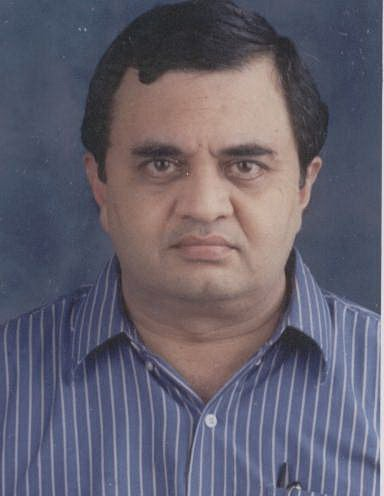
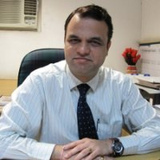
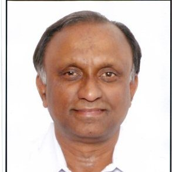
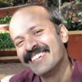

Panel Discussion on Falling Rupee and its Impact on the Indian Economy
Ashish Chauhan

Ashish is the MD & CEO of the Bombay Stock Exchange Ltd.. He serves on the Board of ICCL, CDSL, BOISL, BSE Training Institute, BFSI Sector Skill Council and Marketplace Technologies Limited. He is also a member of the Board of Governors of IIIT D&M, Jabalpur and a few SEBI committees. He currently is the Chairman of the Advisory Committee on Technology of FMC, member of several SEBI committees and has served on various other government and regulatory committees, CBDT and FMC, among others in the past. He is also a member of the Advisory Board of Lend a Hand India, a NGO working in implementing vocational skill development programs for rural and urban youth by providing them practical training at high school level. He has recently been a recipient of the Zee Business award for business transformation. Ashish holds a B.Tech in Mechanical Engineering from IIT Bombay and PGDM from IIM Calcutta.
Dr. Vinish Kathuria

Dr. Vinish Kathuria is an Associate Professor at Shailesh J. Mehta School of Management. His teaching and research activities relate to economics mainly in the fields of Industrial Economics and economics of Industrial and Urban pollution. Before joining SJM SOM, he was on Fulbright Senior Researcher fellowship to University of Colorado, Boulder (US). He has several publications in international journals including Oxford Economic Papers, Ecological Economics, Applied Economics, Journal of International Development, Transportation Research, Technological Forecasting and Social Change among others. He has pursued his post-doc from University of Gothenburg, Sweden in the area of Environmental Economics and Ph.D. internship from United Nations University / Institute for New Technologies (UNU/INTECH), Maastricht, The Netherlands. His thesis was short-listed by UNESCO for its Management of Social Transformation (MOST) award in the year 2000-01.
Prof Aliasgar Q Contractor

Professor Aliasgar Q Contractor is currently Professor of Chemistry and Institute Chair Professor. He was previously the Dean for Alumni and Corporate Relations and also Head, Department of Chemistry at Indian Institute of Technology Bombay. He was also the head of Sophisticated Analytical Instrument Facility from 1999-2005. An alumnus of IIT Bombay, he completed his MSc in 1973 and PhD in 1978. He has moderated many Panel discussions because of his excellent oratory skills
Innovation and Tech Entrepreneurship In India
Dr. Uday Mehta
MD, Sunrise Computer systems, New Delhi

Since 1995, Dr. Mehta runs a dynamic company backed by 2 patents, working on innovative solutions. Recently its Q.R. SMS based proactive customer support solution implemented at KBL was judged by CII as one of the best in the industry.Before this, Dr. Mehta has had enormous experience in the field of consulting. 1977-80, he worked as a senior consultant with PW & Co, and later on worked as a senior consultant with the World Bank from 1982-86. Currently he is working on bringing a one of its kind product in the market, developed by his company. He believes that India in general and IIT Bombay in particular has a great talent pool. There is so much room for innovation and a strong ecosystem can be created which will attract more talent and investment to companies in India.
Madhu Reddy

Graduated from Civil Engg Dept of IIT Bombay, had worked with ACC Ltd and Cement Research Institute of India and has several papers published on cement technology. He has been a serial entrepreneur for the past 25 yrs and had set up a cement factory, an airline, a real estate co, an Investment co, a fishing trawler business, etc. Currently working as social entrepreneur with a few Not For Profit organizations and mentoring alumni of IITB as the Chair, Hyderabad Chapter.
Talk on Rural Education
Dr Ashok Kalbagh

BTech in Mechanical engineering ('74) from IIT Bombay Associated with 'Vigyan Ashram' with aim educating people from rural areas from last 22 years Secretary in Indo US collaboration for engineering education Former general secretary at PAN IIT India
Tech Talk
Sneh Vaswani
Research Engineer at Siemens Corporate Research & Technologies. Team leader of the Autonomous Underwater Vehicle (AUV) project;Worked on Embedded System Design and Implementation. Has had prior work and intern experience Siemens, Phi robotics and ETH Zurich
Kritin Joshi

Kritin Joshi is co-founder and pro-bono consultant at BC Radio, a web-radio platform and a senior advisor at Desh Raag , also working as a consultant at Deloitte. He has earlier worked as a business technology analyst at Deloitte and Touche.
Ankur Pegu

Ankur Pegu is founder and director at Swasth India which runs health centers for the urban poor. He has also worked as a senior analyst at KPMG and as an analyst at Arthur Andersen.
Manish Sethi

Mr. Manish Sethi is currently Promoter/CEO of Dreamspace India, a one stop shop for Interior Design and Execution. He has earlier worked as Head-Solutions Line of Business at Dimension Data, Head Security Solutions at Dimension Data , Regional Manager at RAMCO Systems etc.
Mock Interview Session

Anamika Agarwal:
Anamika Agarwal is a prestigious alumni for IIT Bombay 2002 batch.Graduated in Civil Engineering, she was research associate in Massachusetts Institute of Technology. She spent 6 years in Goldman sachs as Analyst and then pursued her MBA degree from London Business School.Currently she is analytics product manager at Reuters Market Light.
Core Weekend
CIVIL ENGINEERING

Mr.Rajesh Gajjar (Department of Civil Engineering): Date: 5th October 2013 Time: 11am
Mr. Rajesh Gajjar has 21 years of experience in core civil engineering and currently running his own consultancy firm GMD Engineering Consultants Pvt. Ltd.He has been General Manager at Eigen Technical Service Private Ltd(A part of Laing 'O' Rourke UK)2005,January 2011 (6 year).He is expert in Highways ,Bridges,Traffic and Transportation,Wet Infrastructure,Feasibility Studies,Construction Management and Allied Services
Mr. Sunil S. Basarkar (Department of Civil Engineering): Date: 6th October 2013 Time: 1:00 pm
He is presently working as General Manager (Technical Services & Quality) at ITD Cementation India limited.He has done his PhD in Pile foundations from IIT Bombay in 2004 and has field experience of 10 years and Teaching and Research experience of 16 years.He has 42 papers published in Journals and Conference proceedings till date.He is a Life Member of Indian Geotechnical Society and member of Deep Foundation Institute (USA) and Member, Indian Society of Technical Education.
ENERGY SCIENCE
Shirish S Garud Date: 5th October 2013 Time: 11:30 am
Graduate from IIT Bombay,Energy system and Engineering Mtech 1984-1986 batch Presently working as Senior fellow in TERI (The Energy and resources institute) steering the renewable energy technology group.A non-profit organization founded in 1974 creating innovative solutions for sustainable future Worked as Vice president for Green Energy Renewables pvt Ltd which aims at setting up solar and wind power plants across India and also South Africa, Morocco, Indonesia,Poland. Also worked as General Manager for over a decade in Renewables Energy Pvt ltd. where he commercialised solar selective coating technology, developed solar selective coating plant for Solar water heater.
COMPUTER SCIENCE
Sree Hari Nagaralu: Date: 6th October 2013 Time: 11:00 am
Presently working as a principal development manager at Bing, Microsoft in hyderabad. He has been responsible for delivering numerous search quality improvements in bing for the past 6 years and had 4 patents filed. He has also worked as an architect and lead developer at Reconnex from september 2006 to march 2008. Before that he was principal software engineer at Symantec Corporation for 6 years.
MECHANICAL ENGINEERING

Harshwardhan Gupta: Date: 5th October 2013 Time: 11:30 am
IIT Bombay graduate, B.tech in mechanical engineering(1970 Batch) He is currently the Director of Neubauplan Machine Design Auto. He has been working with this company for past 32 years. He is also the managing director of Neubauplan Automation Machines Private Limited. He worked as a design executive at electronica Machine Tools Limited from August 1978 to June 1981. Before that he worked as a design engineer at Godrej for 2 years. Honor and Awards: Special Jury's amention Manus Competition, Germany (April, 2013): For a ground-breaking use of engineering plastic sliding bearing in a very high-impact application.
METALLURGICAL ENGINEERING AND MATERIAL SCIENCE

Vivek Pavaskar: Date: 5th October 2013 Time: 3:00 pm to 3:45 pm
Graduate from IIT Bombay,Bachelor of Technology (B.Tech.), Metallurgical Engineering 1972-1977 Presently the Owner of TECHNIK founded in 1992. Organizational work includes Advice, Education & Training in Welding Technology Worked as Technical Manager in Advani Oerlikon Ltd. Mumbai India where he was responsible for Marketing & Technical Support for Continuous Welding Processes, Systems and Consumables Worked as Working Engineer in Larsen & Toubro Ltd. Mumbai
INDUSTRIAL DESIGN CENTER(IDC)

Gokul Krishnan: Date: 6th October 2013 Time: 3:00 pm
Owner of Peacock Design is a Master of Design from Industrial Design Centre (IDC) IIT Bombay 1988-90 Batch. Peacock Design Lab creates innovative products using latest CAD and rapid manufacturing technologies.Gokul has over 23 years of experience in the field of industrial design. He has worked for A Little World, Intergold India Pvt Ltd, Crompton Greaves and Godrej & Boyce Mfg. Ltd. over this time.